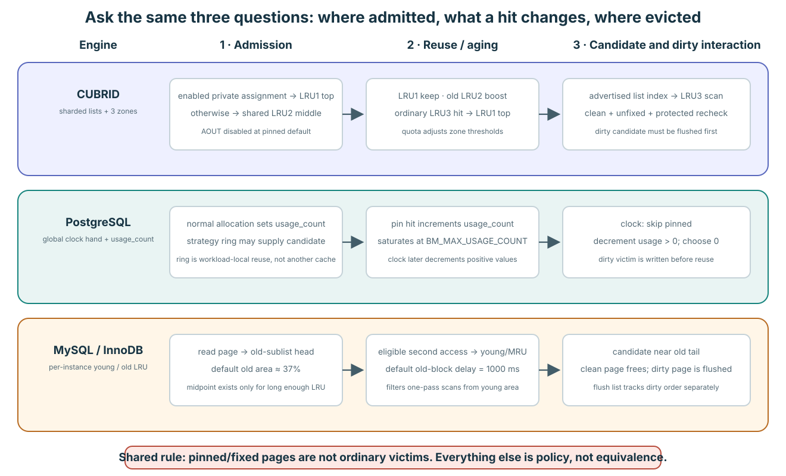

공통 문제: 스캔이 지나가도 유용한 페이지를 남기려면?
요청이 H1과 H2를 반복해서 읽는다고 생각해 봅시다. 그 사이에 보고서 쿼리가 S1, S2, S3, …를 한 번씩 읽습니다. H1과 H2는 곧 다시 필요할 가능성이 높은 hot working set입니다. 새로 읽은 스캔 페이지를 모두 가장 강하게 보호하면, 다시 쓸 페이지가 밀려날 수 있습니다. 이를 캐시 오염(cache pollution)이라고 합니다.
H1 → H2 → H1 → H2
반복 사용S1 → S2 → S3 → …
한 번씩 읽기H1 → H2
메모리에 남았을까, 다시 읽을까?세 엔진에 같은 질문을 던지기 위한 상황입니다. 프레임 세 개로 실제 DB를 모사하거나 성능을 측정한 결과가 아닙니다. 뒤의 그림은 더 큰 풀의 일부를 보여 줍니다. 별도 언급이 없으면 clean 페이지를 가정하며, 사용 중인 프레임은 여전히 재사용할 수 없습니다.
엔진마다 네 가지를 물어봅시다. 새 페이지는 어디로 들어오는가? 무엇이 보호를 늘리는가? 보호는 어떻게 줄어드는가? 교체 후보는 어디서 찾는가? PostgreSQL과 InnoDB는 CUBRID와 다른 방식으로 답합니다. InnoDB는 MySQL의 스토리지 엔진이며, 여기서는 그 buffer pool을 비교합니다.
CUBRID 복습: 도메인을 고르고 LRU3를 살펴본다
여기서 도메인은 교체 판단을 위해 상주 페이지를 묶는 private 또는 shared LRU 하나를 뜻합니다. 별도의 페이지 버퍼 사본이나 독점적으로 예약된 프레임 영역이 아닙니다. 한 페이지는 한 시점에 이 목록 중 하나에 속합니다.
Private / shared
어느 그룹에서 경쟁하는가?LRU1 → LRU2 → LRU3
경계 조정으로 내려가는 페이지후보 → 안전 조건 확인
차갑다고 바로 재사용할 수는 없다이 정책의 일반 전이는 마지막 unfix 때 일어납니다. LRU1은 hot 페이지를 보호하고, LRU2는 중간 기회를 주며, LRU3는 후보를 공급합니다. LRU1의 일반 재사용은 위치를 바꾸지 않습니다. LRU2 승격에는 list-age 검사가 있고, LRU3의 일반 재사용은 LRU1으로 돌아갑니다. Zone 이동은 메타데이터 변경이며 프레임의 물리적 위치를 옮기는 작업이 아닙니다.
H1/H2와 스캔의 결과는 도메인 배정, 진입 위치, 재사용, quota 압력에 따라 달라집니다. Private 도메인이 모든 다른 접근 흐름으로부터 격리를 보장하지는 않습니다. 다른 페이지를 위해 프레임을 재사용하려면 clean 상태와 사용자·대기자 등 상태의 보호된 검사가 필요합니다. 이 리비전에서 AOUT은 비활성화되어 있습니다.
앞의 CUBRID 구성 예제에서는 A와 B가 같은 private 도메인을 썼습니다. B가 S1/S2를 읽기 전에 A가 H1/H2 읽기를 재개하면 둘 다 남았고, A가 멈춰 있으면 S1이 H1을 대체하고 H2만 남았습니다. 바뀐 입력은 재사용 시점이었습니다. 이 짧은 결과가 private 도메인의 격리나 더 긴 스캔에 대한 보호를 보장하지는 않습니다.
세부 동작과 소스 펼치기
- Admission: AOUT이 꺼진 pinned baseline에서 새로 load된 VOID BCB는 final-unfix execution context에 enabled private-LRU assignment가 있으면 private S+p의 LRU1 top으로 들어가고, 없으면 shared LRU2 middle로 들어간다.
- Reuse: LRU1은 그대로 둔다. LRU2 page는 list-tick age가 현재 LRU2 count 절반 이상일 때만 LRU1으로 돌아간다. Ordinary LRU3 reuse는 LRU1으로 돌아간다.
- Victim: allocator가 advertise된 LRU index를 consume하고 그 list를 lock한 뒤 LRU3 BCB를 최대 1,000개 검사한다. 모든 candidate는 clean/unfixed/waiter-free identity revalidation을 통과해야 한다.
- Scale: 여러 list와 mutex가 ordering을 shard한다. Private quota의 LRU1/LRU2 threshold는 각각 5%다. Shared default는 shared target의 40%와 5%다.
Pinned CUBRID: admission과 hit transition, bounded LRU3 scan, quota adjustment.
PostgreSQL: 다시 쓴 페이지에 기회를 몇 번 더 준다
Buffer descriptor는 프레임 하나의 메타데이터로, 역할상 CUBRID의 BCB에 대응합니다. PostgreSQL은 descriptor를 배열에 둡니다. Clock hand는 다음에 검사할 배열 위치를 기억하고, 끝에 도달하면 처음으로 돌아갑니다. 페이지가 배열 안에서 이동하는 것은 아닙니다.
각 상주 페이지에는 작은 usage_count, 즉 재사용 크레딧이 있습니다. 기본 전략에서 backend가 처음 pin할 때 크레딧을 하나 더 받을 수 있으며 상한은 5입니다. Backend는 페이지를 사용하는 PostgreSQL 서버 프로세스입니다. Pin은 이 비교에서 CUBRID fix처럼 호출자가 사용하는 동안 프레임 재사용을 막습니다. 페이지 내용의 동시 접근을 보호하는 잠금과는 별개입니다.
Q16 · 중첩 Pin의 기록
구성한 시작 상태: 공유 descriptor D는 유효한 clean 페이지를 나타내며, 공유 refcount와 usage credit은 모두 0입니다. 기본 strategy를 사용합니다. Backend A가 D를 연속 세 번 pin한 상태에서 B가 D를 처음 pin합니다. 이후 A만 자신의 세 pin을 모두 반납합니다. Clock 방문이나 다른 변경은 없습니다.
예측 질문: 이 사건들의 순서에 따라 공유 refcount, A의 private refcount, usage credit을 어떻게 기록하겠습니까?
논의 후 설명 보기
A의 첫 pin 뒤 공유 refcount는 1, A의 private refcount는 1, credit은 1입니다. 두 중첩 pin 뒤 공유 값은 1, private은 3, credit은 1입니다. B의 첫 pin 뒤 공유 값과 credit은 각각 2입니다. A가 모두 반납하면 공유 값은 1, A private은 0, credit은 2이며 B가 D를 보호합니다. Credit의 상한은 5이고 전체 호출 횟수를 세는 값은 아닙니다.
선택 후속 질문: 최종 공유 refcount만 보았을 때 복원할 수 없는 호출 이력은 무엇인가요?
Q17 · 다른 인터페이스의 보호 책임
구성한 시작 상태: CUBRID READ fix를 사용하던 호출자를 PostgreSQL용 wrapper로 옮기는 설계입니다. Wrapper는 기존 identity의 buffer를 pin해 주소만 반환합니다. Caller는 반환 즉시 페이지 바이트를 읽습니다. 같은 페이지를 pin한 B가 content 변경을 위한 보호를 보유하고 있으며 변경 중입니다.
예측 질문: 이 wrapper가 caller의 읽기를 지원하려면 어떤 보호 책임을 인터페이스에 명시해야 할까요?
논의 후 설명 보기
Pin은 메모리 사용 수명을 보호하며 호환되는 바이트 접근까지 보장하지 않습니다. 해당 접근 경로에 필요한 content 보호의 획득·반납 주체를 명시해야 합니다. 일반 공유 버퍼 읽기에서는 바이트를 보기 전에 호환되는 content lock을 얻도록 wrapper의 반환 계약이나 caller의 의무에 넣습니다. 주소와 pin만으로 READ fix의 계약을 재현할 수 없습니다.
선택 후속 질문: 그 책임을 wrapper와 caller 중 누가 수행하게 할지 결정할 때 반환 계약을 어떻게 적겠습니까?
A의 중첩과 공유 descriptor 보호
유효하고 clean인 D에서 NORMAL strategy, credit 0으로 시작합니다. Sweep과 다른 변화는 없습니다. Private refcount는 각 backend에 속합니다.
1. Pin 이전
주체 / 사건: 구성한 시작 지점
- Shared D · refcount / usage_count
- 0 / 0
- Backend A · private pins
- 0
- Backend B · private pins
- 0
- Content access
- no content protection assumed
전이 조건: D를 보유한 backend 없음
변경 / 결과: 두 공유 값이 0에서 시작
2. A의 첫 pin
주체 / 사건: A PinBuffer NORMAL
- Shared D · refcount / usage_count
- 1 / 1
- Backend A · private pins
- 1
- Backend B · private pins
- 0
- Content access
- pin protects reuse; bytes need separate protection
전이 조건: A의 private pin이 없으며 atomic 갱신 성공
변경 / 결과: 공유 refcount 0→1, usage 0→1, A private 0→1
3. A가 두 번 중첩
주체 / 사건: A가 이미 D를 보유한 상태에서 pin
- Shared D · refcount / usage_count
- 1 / 1
- Backend A · private pins
- 3
- Backend B · private pins
- 0
- Content access
- separate from pin nesting
전이 조건: 기존 private refcount로 중첩 처리
변경 / 결과: A private 1→3. 공유 refcount와 usage는 1 유지
4. B의 첫 pin
주체 / 사건: B PinBuffer NORMAL
- Shared D · refcount / usage_count
- 2 / 2
- Backend A · private pins
- 3
- Backend B · private pins
- 1
- Content access
- B still needs required content protection
전이 조건: B의 private pin 없음. Usage는 상한 5 미만
변경 / 결과: 공유 refcount 1→2, usage 1→2. A private은 3 유지
5. A가 private pin 셋 반납
주체 / 사건: A가 모든 중첩 반납
- Shared D · refcount / usage_count
- 1 / 2
- Backend A · private pins
- 0
- Backend B · private pins
- 1
- Content access
- B’s pin remains; pin alone is not content locking
전이 조건: A의 마지막 private 반납에서만 공유 refcount 감소
변경 / 결과: A private 3→0, 공유 2→1, usage 2 유지. B가 재사용을 막음
소스 근거: 구성한 실행 순서이며 runtime 증거가 아닙니다. PinBuffer:3295–3386
PostgreSQL: 크레딧이 늘고 줄어드는 과정
usage_count = 1
새 페이지의 초기 크레딧1 → 2 → 3
별도의 첫 pin 두 번; 사이에 sweep 없음3 → 2 → 1 → 0
Unpinned 방문마다 하나씩 차감후보로 확보
여전히 unpinned여야 한다그림은 시간에 따른 별도 단계이며 하나의 원자적 연산이 아닙니다. 1 → 2 → 3 예시는 backend가 이전 pin을 완전히 해제한 뒤 기본 전략으로 다시 접근하는 경우입니다. 같은 backend가 pin을 유지한 채 중첩해서 pin해도 shared 크레딧이 계속 늘지는 않습니다. 양수 크레딧은 기회를 더 주지만 정확한 접근 횟수나 타임스탬프가 아닙니다. Aging은 일정 시간이 지난 뒤가 아니라 hand가 방문할 때 일어납니다.
이점: 반복 사용되는 H1/H2는 한 번 읽힌 S 페이지보다 더 많은 기회를 얻을 수 있습니다. 잃는 정보: 크레딧이 모두 2인 두 페이지 사이에는 “어느 쪽이 더 최근인가”라는 순서가 없습니다. Hand가 어디에 있는지도 먼저 만날 후보에 영향을 줍니다.
PostgreSQL: 대량 스캔은 작은 ring을 돌려 쓴다
Clock만으로 모든 스캔을 알아내지는 않습니다. 대량 작업은 access-strategy ring을 사용할 수 있습니다. 이는 shared pool의 프레임 ID를 담는 작은 backend-local 배열입니다. 작업은 슬롯을 순환하면서 해당 프레임을 재사용하려고 합니다.
slot 0: frame 17
slot 1: frame 42
slot 2: frame 81
다음 슬롯의 프레임 검사
조건을 만족하면 재사용전역 후보 선택으로 진행
다른 사용자의 상태도 확인재사용에 성공하면 새 S 페이지가 이 작은 집합 안의 이전 S 페이지를 대체합니다. 계속 더 많은 프레임을 차지할 필요가 줄어드는 것입니다. Pin된 프레임이나 usage_count > 1인 프레임은 ring 재사용에서 제외합니다. 후자는 다른 사용자가 쌓은 재사용 크레딧을 보호합니다. Ring 전략의 접근 자체는 크레딧을 1보다 높게 계속 올리지 않습니다.
CUBRID와 비교하면: ring은 한 작업이 가진 shared frame ID 목록이며, private LRU의 상주·quota 도메인이 아닙니다. 이 전략을 사용하는 작업의 캐시 오염을 제한하지만 임의의 모든 스캔을 보호하지는 않습니다.
Q19 · 두 Ring의 같은 Buffer ID
구성한 시작 상태: 서로 다른 backend A와 B의 ring slot이 같은 공유 buffer ID F를 저장합니다. F는 처음에 R을 나타냈습니다. A가 필요한 보호 절차를 거쳐 F의 identity를 S로 바꾸고 pin을 반납했습니다. B의 ring 배열에는 변경이 없었으며, B는 이제 그 slot을 방문하려고 합니다. F는 clean, refcount 0, credit 1입니다.
예측 질문: B의 slot 값이 유지됐다는 기록으로 다음 방문의 페이지 identity에 대해 어디까지 설명할 수 있을까요?
논의 후 설명 보기
Slot은 계속 F를 참조하지만 현재 F의 identity는 S입니다. Slot이 R을 소유하거나 유지하는 것은 아닙니다. B는 현재 frame에 대해 보호된 ring 선택을 시도하고 이후 필요한 identity·writeback 절차를 수행합니다. Backend의 참조 배열과 CUBRID pool이 관리하는 BCB 정책 소속을 기준으로 비교합니다.
선택 후속 질문: 이 소유 관계를 CUBRID private LRU의 소유 관계와 비교할 때 기준으로 삼을 객체는 무엇인가요?
Q20 · Strategy를 바꾼 같은 후보
구성한 시작 상태: 각각 독립된 세 실행에서 BULKREAD, BULKWRITE, VACUUM strategy의 ring으로 같은 조건의 후보를 선택했습니다. 후보는 BM_PERMANENT인 dirty 페이지이며, 필요한 content lock을 대기 없이 얻었습니다. 페이지 LSN까지 WAL flush가 필요합니다. 선택 전 refcount는 0, credit은 1이고 다른 backend의 개입은 없습니다.
예측 질문: 같은 후보의 이후 처리는 세 strategy에서 어떻게 달라질 수 있나요?
논의 후 설명 보기
BULKREAD는 이 ring 후보를 거절하고 현재 slot을 InvalidBuffer로 비운 뒤 lock과 pin을 반납하고 재시도합니다. 공유 페이지의 identity를 제거하는 분기는 아닙니다. BULKWRITE와 VACUUM은 이 bulk-read 거절 정책을 쓰지 않으며 WAL을 보존하고 flush한 뒤 보호된 invalidation으로 갈 수 있습니다. NORMAL에는 strategy ring이 없습니다. 실제 크기는 factory 정책 외에도 caller 입력, AIO·pin 한도와 NBuffers/8 상한을 확인합니다.
선택 후속 질문: 작은 공유 pool에서 ring의 실제 크기를 설명하려면 factory 기본값 외에 어느 계산과 caller 입력을 확인해야 하나요?
로컬 ID가 공유 frame을 참조
Factory 크기와 별개의 두 slot 설명 ring입니다. 다음 방문은 slot 0입니다. F4/F5/F6은 clean이며 동시 변경은 없습니다. 두 번째 miss 전에 첫 pin을 반납하고 전역 fallback은 F6을 고른다고 가정합니다.
1. 두 miss 이전의 ring
주체 / 사건: 구성한 시작 지점
- Backend-local ring · slots 0 / 1
- F4 / F5
- Shared F4 · ref / usage / tag
- 0 / 1 / R
- Shared F5 · ref / usage / tag
- 0 / 2 / T
- Shared F6 · ref / usage / tag
- 0 / 0 / U
전이 조건: Slot은 buffer ID를 저장하며 페이지를 소유하지 않음
변경 / 결과: Slot은 F4,F5에서 시작. Frame metadata는 공유 pool에 있음
2. Slot 0: ring 선택 성공
주체 / 사건: Backend가 slot 0의 F4 방문
- Backend-local ring · slots 0 / 1
- F4 / F5
- Shared F4 · ref / usage / tag
- 1 / 1 / R
- Shared F5 · ref / usage / tag
- 0 / 2 / T
- Shared F6 · ref / usage / tag
- 0 / 0 / U
전이 조건: ref=0, usage≤1에서 선택 CAS 성공
변경 / 결과: F4 ref 0→1. Slot은 F4 유지. Ring 선택만으로 tag R을 바꾸지 않음
3. 보호된 재사용·반납 후 slot 1
주체 / 사건: Caller가 안전한 재사용 후 F4를 S로 바꾸고 반납한 뒤 F5 방문
- Backend-local ring · slots 0 / 1
- F4 / F5
- Shared F4 · ref / usage / tag
- 0 / 1 / S
- Shared F5 · ref / usage / tag
- 0 / 2 / T
- Shared F6 · ref / usage / tag
- 0 / 0 / U
전이 조건: F4 identity 교체는 별도의 writeback·mapping 조건 필요. F5 usage=2이면 ring 재사용 거절
변경 / 결과: F4 R→S 후 pin 반납. F5는 공유 pool에 유지하며 ring은 fallback
4. Fallback이 F6 선택 후 ID 하나 교체
주체 / 사건: 전역 clock 후 AddBufferToRing
- Backend-local ring · slots 0 / 1
- F4 / F6
- Shared F4 · ref / usage / tag
- 0 / 1 / S
- Shared F5 · ref / usage / tag
- 0 / 2 / T
- Shared F6 · ref / usage / tag
- 1 / 0 / U
전이 조건: Pin 없고 credit 0인 F6을 고른다는 전제. CAS 성공
변경 / 결과: F6 ref 0→1, slot 1 F5→F6. F5 tag와 공유 메모리 상태는 유지
소스 근거: 구성한 실행 순서이며 runtime 증거가 아닙니다. ring claim/refill:615–705 · later reuse:2471–2673
같은 dirty 후보, 세 독립 strategy
각 열은 하나의 실행을 이어가는 것이 아니라 Q20의 독립 실행입니다. Ring에서 고른 dirty BM_PERMANENT R은 초기 ref=0, usage=1이며 선택과 조건부 content lock에 성공합니다. WAL flush가 필요합니다.
1. 후보 선택과 content 보호
주체 / 사건: 서로 다른 세 할당 backend
- BULKREAD · slot / R
- R / pin=1; DIRTY=1
- BULKWRITE · slot / R
- R / pin=1; DIRTY=1
- VACUUM · slot / R
- R / pin=1; DIRTY=1
- Other shared frame H
- pinned by another backend
전이 조건: 필요한 content 보호 아래 LSN 검사
변경 / 결과: 각각 R pin을 보유하나 필요한 WAL은 부족. 별도 H의 pin은 유지
2. Strategy별 판단
주체 / 사건: GetVictimBuffer → StrategyRejectBuffer
- BULKREAD · slot / R
- InvalidBuffer / shared R remains dirty
- BULKWRITE · slot / R
- R / WAL→FlushBuffer path
- VACUUM · slot / R
- R / WAL→FlushBuffer path
- Other shared frame H
- pin still protects H
전이 조건: Strategy, from_ring, BM_PERMANENT, WAL 필요 조건. 거절은 BULKREAD만
변경 / 결과: BULKREAD는 slot R→InvalidBuffer 후 lock·pin 반납. 다른 둘은 WAL·write로 진행
3. 재시도 또는 이후 보호된 invalidation
주체 / 사건: Bulk-read는 선택 재시도, 다른 caller는 write 후 재검사
- BULKREAD · slot / R
- retry; empty current slot falls back
- BULKWRITE · slot / R
- recheck ref=1 and !DIRTY
- VACUUM · slot / R
- recheck ref=1 and !DIRTY
- Other shared frame H
- still pinned; not a victim
전이 조건: 전역 clock도 H pin을 건너뜀. 이후 identity 제거는 자기 pin만 있고 clean이어야 함
변경 / 결과: Ring 거절만으로 공유 R을 바꾸지 않음. Write 성공만으로 identity 교체를 허가하지도 않음
소스 근거: 구성한 실행 순서이며 runtime 증거가 아닙니다. caller conditions:2590–2639 · BULKREAD rejection:741–770
PostgreSQL: 확인하고, credit을 줄이고, 건너뛰고, 확보하기
구성 예제: 동시 변경과 strategy-ring 재사용이 없고 global hand가 A를 가리킨다. 큰 pool의 일부 구간을 보는 것이다. A는 unpinned이며 usage_count가 2다. 1로 줄이고 계속 간다. B는 pinned이며 usage_count가 0이다. 건너뛴다. C는 unpinned, clean이며 usage_count가 0이다. 원자적으로 pin하여 후보로 확보한다. Invalidation에서도 상태를 재검사한다. Dirty 후보라면 조건부 lock과 flush를 수행한 뒤 다시 검증해야 할 수 있다.
PinBufferForBlock
→ BufferAlloc
→ GetVictimBuffer
→ StrategyGetBuffer
→ ClockSweepTick소스 위치 펼치기
고정 소스: bufmgr.c:1223–1251 · bufmgr.c:2268 · bufmgr.c:2548–2671 · freelist.c:239–317
Usage credit은 시각이나 누적 hit 횟수가 아니다. 기본 경로에서 backend의 첫 pin은 이를 최대 5까지 높일 수 있지만, 같은 backend의 중첩 pin이 shared credit을 계속 높이지는 않는다. Access-strategy ring은 다른 우선 경로를 쓰며, 별도 전용 pool이 아니라 shared-buffer ID를 담는다.
고정 descriptor: 감소, 건너뜀, 감소, 선택
모두 clean이며 동시 변경이 없는 네 descriptor 설명 모델입니다. Hand는 F0에서 시작하고 F1은 다른 backend가 보유합니다. 선택은 새 pin에서 끝나며 identity 교체는 이후 작업입니다.
1. F0에서 초기화
주체 / 사건: Hand의 첫 방문 전
- F0 · identity / ref / usage
- H1 / 0 / 2
- F1 · identity / ref / usage
- S1 / 1 / 0
- F2 · identity / ref / usage
- S2 / 0 / 1
- F3 · identity / ref / usage
- S3 / 0 / 0
전이 조건: 이전 강의 trace를 이어받지 않는 새 사례
변경 / 결과: Frame 위치 고정. 초기 credit 2,0,1,0
2. F0 방문: 감소
주체 / 사건: F0의 clock hand
- F0 · identity / ref / usage
- H1 / 0 / 1
- F1 · identity / ref / usage
- S1 / 1 / 0
- F2 · identity / ref / usage
- S2 / 0 / 1
- F3 · identity / ref / usage
- S3 / 0 / 0
전이 조건: Pin 없고 usage 양수. 감소 CAS 성공
변경 / 결과: F0 usage 2→1 후 hand는 F1. 선택 없음
3. F1 방문: 건너뜀
주체 / 사건: F1의 clock hand
- F0 · identity / ref / usage
- H1 / 0 / 1
- F1 · identity / ref / usage
- S1 / 1 / 0
- F2 · identity / ref / usage
- S2 / 0 / 1
- F3 · identity / ref / usage
- S3 / 0 / 0
전이 조건: refcount=1이면 선택과 감소를 하지 않음
변경 / 결과: Descriptor 필드 변경 없이 hand가 F2로 이동
4. F2 방문: 0으로 줄이고 이동
주체 / 사건: F2의 clock hand
- F0 · identity / ref / usage
- H1 / 0 / 1
- F1 · identity / ref / usage
- S1 / 1 / 0
- F2 · identity / ref / usage
- S2 / 0 / 0
- F3 · identity / ref / usage
- S3 / 0 / 0
전이 조건: 양수 usage 분기는 감소 성공 후 이 방문을 끝냄
변경 / 결과: F2 usage 1→0. 이 방문에서 선택하지 않고 hand는 F3
5. F3 방문: pin으로 선택
주체 / 사건: Allocator의 clock CAS
- F0 · identity / ref / usage
- H1 / 0 / 1
- F1 · identity / ref / usage
- S1 / 1 / 0
- F2 · identity / ref / usage
- S2 / 0 / 0
- F3 · identity / ref / usage
- S3 / 1 / 0
전이 조건: 현재 ref=0, usage=0에서 자기 pin 추가 CAS 성공
변경 / 결과: F3 refcount 0→1 후 descriptor 반환. Identity는 아직 S3
소스 근거: 구성한 실행 순서이며 runtime 증거가 아닙니다. clock selection:239–317
독립 초기화: F3의 초기 credit이 1
앞선 표의 시작 상태로 모든 descriptor를 초기화하고 초기 F3 usage만 0→1로 바꿉니다. 동시 변경은 없습니다. 중간 방문은 변화 설명에 모두 적습니다.
1. 새 네 frame 시작 지점
주체 / 사건: 사례 초기화
- F0 · identity / ref / usage
- H1 / 0 / 2
- F1 · identity / ref / usage
- S1 / 1 / 0
- F2 · identity / ref / usage
- S2 / 0 / 1
- F3 · identity / ref / usage
- S3 / 0 / 1
전이 조건: 첫 trace의 마지막 pin·감소 상태를 이어받지 않음
변경 / 결과: Refcount·credit을 2,0,1,1 시작 상태로 초기화
2. 첫 전체 순회
주체 / 사건: Hand F0→F1→F2→F3
- F0 · identity / ref / usage
- H1 / 0 / 1
- F1 · identity / ref / usage
- S1 / 1 / 0
- F2 · identity / ref / usage
- S2 / 0 / 0
- F3 · identity / ref / usage
- S3 / 0 / 0
전이 조건: Pin 없는 양수 credit 감소. F1은 건너뜀
변경 / 결과: F0 2→1, F1 건너뜀, F2 1→0, F3 1→0. 선택 없음
3. 두 번째 순회 F0 후 F1 건너뜀
주체 / 사건: Hand F0 후 F1
- F0 · identity / ref / usage
- H1 / 0 / 0
- F1 · identity / ref / usage
- S1 / 1 / 0
- F2 · identity / ref / usage
- S2 / 0 / 0
- F3 · identity / ref / usage
- S3 / 0 / 0
전이 조건: F0의 양수 credit으로 이번 방문을 넘김. F1은 여전히 pin
변경 / 결과: F0 1→0 후 F1 건너뜀. Hand가 F2에 도달
4. 이후 방문에서 F2 선택
주체 / 사건: F2의 clock
- F0 · identity / ref / usage
- H1 / 0 / 0
- F1 · identity / ref / usage
- S1 / 1 / 0
- F2 · identity / ref / usage
- S2 / 1 / 0
- F3 · identity / ref / usage
- S3 / 0 / 0
전이 조건: ref=0, usage=0에서 선택 CAS 성공
변경 / 결과: F2 refcount 0→1. 이 순회에서 F3까지 가지 않음
소스 근거: 구성한 실행 순서이며 runtime 증거가 아닙니다. clock branches:239–317
PostgreSQL: Clock이 재사용 credit을 줄인다
PostgreSQL은 최근 순서 목록 대신 제한된 재사용 크레딧을 기억하고 clock 방문으로 줄입니다. 크레딧 예시에 전이가 있고, 아래에는 세부 규칙과 소스를 모았습니다.
세부 동작과 소스 펼치기
- Admission: 새로 claim한 shared descriptor는
usage_count = 1을 받는다. - Reuse: backend의 첫 pin이 shared
usage_count를 최대 5까지 증가시킨다. 같은 backend의 nested pin은 private refcount만 바꾸므로 두 번째 shared credit을 얻지 않는다. - Victim: atomic clock hand가 buffer descriptor를 진행한다. Pinned buffer는 건너뛰고 unpinned positive count는 줄이며 unpinned zero를 claim한다. 따라서 count 5는 최대 여섯 번의 full visit까지 살아남을 수 있다.
- Bulk scan: backend-local strategy ring이 bulk read/write와 vacuum을 위해 작은 ID 집합을 reuse한다. 그래도 shared pool의 frame을 가리키며 private buffer pool은 아니다.
usage_count = 2인 descriptor 둘 사이에는 “더 오래된 것을 먼저”라는 관계가 없다. Count는 clock visit이 줄이는 bounded reuse credit이지 timestamp나 linked-list rank가 아니다.Pinned PostgreSQL: clock selection, maximum usage count 5, strategy-ring size.
Q18 · Clock 후보의 동시 변경
구성한 시작 상태: Hand가 D의 credit을 1에서 0으로 낮추고 다음 descriptor로 갔습니다. 다시 D를 방문한 A는 refcount 0과 credit 0을 읽었습니다. A가 그 상태를 기대한 CAS로 자기 pin을 얻기 전에 B의 정상적인 첫 pin이 성공했고, B는 pin을 유지합니다. 다른 변화는 없습니다.
예측 질문: 이 순서에서 A가 D를 반환할 수 있는지를 결정하는 사건은 무엇인가요?
논의 후 설명 보기
이전의 상태를 기대한 A의 CAS가 실패합니다. 다시 읽으면 B의 pin이 있으므로 이 방문에서 D를 반환할 수 없습니다. 0을 읽은 것은 관찰이고 성공한 CAS가 보호를 확보합니다. 동시 변경이 없어도 양수 credit을 0으로 줄인 방문은 다음으로 이동하며, 이후 0인 상태의 방문에서 선택합니다.
선택 후속 질문: 동시 변경이 없는 경우에도 credit을 0으로 낮춘 방문과 후보를 반환하는 방문을 하나로 합친 추적은 어떤 정책 차이를 만들까요?
0을 읽는 것과 0에서 선택하는 것
Q18의 독립 동시성 사례입니다. B는 성공한 NORMAL pin을 trace 끝까지 유지합니다.
1. 이전 감소 방문
주체 / 사건: Clock이 D를 age
- Descriptor D · ref / usage
- 0 / 0
- Allocator A
- no pin
- Backend B
- no pin
- Result
- no claim
전이 조건: Pin 없고 credit 양수
변경 / 결과: Usage 1→0 후 hand 이동. Pin은 없음
2. A가 0을 관찰
주체 / 사건: A가 이후 hand 방문으로 돌아옴
- Descriptor D · ref / usage
- 0 / 0
- Allocator A
- expected 0 / 0; no pin
- Backend B
- no pin
- Result
- observation only
전이 조건: 기대한 상태를 읽었을 뿐 CAS 선택 전
변경 / 결과: A는 ref=0, usage=0을 기대 상태로 저장. 공유 필드 변경 없음
3. A의 CAS 전에 B가 pin
주체 / 사건: B의 NORMAL 첫 pin 성공
- Descriptor D · ref / usage
- 1 / 1
- Allocator A
- expected 0 / 0; no pin
- Backend B
- holds pin
- Result
- A has not claimed D
전이 조건: 공유 상태 atomic 갱신 성공
변경 / 결과: D ref 0→1, usage 0→1. A의 기대 상태는 오래됨
4. A의 기대 상태 CAS 실패
주체 / 사건: A가 CAS 실패 후 다시 읽음
- Descriptor D · ref / usage
- 1 / 1
- Allocator A
- CAS failed; skip D
- Backend B
- holds pin
- Result
- D not returned to A
전이 조건: 현재 B의 pin이 D 반환을 막음
변경 / 결과: A pin은 추가하지 않음. 현재 ref=1로 건너뜀. Identity 유지
소스 근거: 구성한 실행 순서이며 runtime 증거가 아닙니다. clock CAS loop:252–317
InnoDB: 새로 읽은 페이지는 먼저 지켜본다
Buffer-pool instance는 풀의 일부와 자체 목록을 관리합니다. 페이지 ID가 어느 instance에 속할지 결정합니다. 한 instance 안에서 young과 old는 하나의 상주 LRU 목록을 나눈 두 영역입니다. 둘 다 실제 페이지를 메모리에 보관하며, old는 이미 퇴출된 페이지라는 뜻이 아닙니다.
H1 · H2 · …
더 강하게 보호하는 쪽↓ 새로 읽은 S 페이지
Old의 앞부분으로 진입… · 더 오래된 S 페이지
이쪽 끝부터 후보 탐색이 그림은 항목이 512개보다 많고 old 영역이 형성된 목록을 가정합니다. 디스크에서 읽은 페이지는 young head 대신 LRU_old 바로 뒤로 들어갑니다. Old 목표 비율의 기본값은 37%입니다. “Midpoint”는 목록 중간에 삽입한다는 뜻이지 정확히 절반으로 나눈다는 뜻이 아닙니다. 짧은 목록은 head 삽입을 사용하고, 메모리에서 새로 생성한 페이지는 young으로 들어갑니다.
이점: 한 번 읽는 스캔 페이지는 우선 old 영역에서 경쟁합니다. 모든 S 페이지에 반복해서 유용했던 H 페이지와 같은 위치를 곧바로 주지 않습니다. 영역은 동적으로 관리되므로 H1과 H2가 절대 퇴출되지 않는다는 보장은 아닙니다.
InnoDB: 나중에 다시 쓰면 young으로 올라갈 수 있다
한 페이지의 여러 행을 읽으면 한 번의 스캔 중에도 그 페이지에 여러 번 접근할 수 있습니다. 즉시 반복되는 접근마다 승격하면 이 짧은 집중 접근을 장기적인 유용성으로 오해합니다. 퇴출이 시작된 상태에서 기본 innodb_old_blocks_time 조건은 첫 논리적 접근으로부터 1,000 ms 이상 지난 뒤의 적격 접근을 요구합니다.
P에 첫 접근
첫 접근 시각 기록; old 유지P에 다시 접근
아직 이르므로 old 유지P에 다시 접근
Young head로 이동할 수 있음이 구성 예시는 교체 우선순위를 갱신하는 일반 접근을 사용하며, P가 계속 상주하며 old에 있고, 기본 지연 설정이 켜져 있으며, 퇴출이 시작된 상태를 가정합니다. 시간만 지난다고 P가 승격되지는 않습니다. 나중 접근 전에 P가 퇴출되면 다시 읽어야 합니다. 일반 fetch 경로에서 특수한 Page_fetch::SCAN과 PEEK_IF_IN_POOL 접근은 younging을 건너뜁니다. 빠른 스캔 접근을 걸러 내는 이점이 있지만, 실제로 유용한 페이지도 보호를 얻기까지 기다릴 수 있습니다.
CUBRID와 비교하면: 이 조건은 첫 접근 이후의 경과 시간을 사용합니다. CUBRID의 LRU2 조건은 list-tick age와 목록의 페이지 수를 사용합니다. 둘 다 승격을 걸러 내지만 “충분히 오래됨”의 의미가 다릅니다.
InnoDB: old tail을 살핀 뒤 free list 재시도하기
구성 예제: pool instance 하나에 512개보다 긴 list와 형성된 old 영역이 있다. Free list는 비어 있고 compressed-page 대안과 동시 변경은 없다. Tail부터 A는 buffer-fixed이므로 건너뛴다. B는 dirty이므로 clean eviction에서는 건너뛴다. C는 clean이고 이동 가능하므로 내보낸다. 할당 loop가 free list로 돌아가 block을 얻는다. 동시 실행이 있으면 다른 thread가 그 block을 먼저 가져갈 수 있다.
buf_LRU_get_free_block
→ buf_LRU_scan_and_free_block
→ buf_LRU_free_from_common_LRU_list
→ buf_LRU_free_page소스 위치 펼치기
고정 소스: buf0lru.cc:517–580 · buf0lru.cc:300–382 · buf0lru.cc:956 · buf0flu.cc:476–497
Old 영역이 있으면 disk-read page는 LRU_old 바로 뒤로 들어간다. 새로 생성한 page는 young에 들어가고, 짧은 list에서는 head insertion을 쓴다. Eviction이 시작된 뒤 기본 old-page 시간 조건에서는 첫 논리 접근으로부터 적어도 1,000 ms가 지난 후 조건에 맞는 접근이 있어야 한다. 시간 경과만으로 승격하지 않는다. Old와 young 모두 ghost가 아니라 resident page를 담는다. Midpoint admission과 지연 승격이 없다면 scan pollution을 다른 정책으로 제어해야 한다.
첫 배치 · 접근 시 시간 조건 · 기본값
InnoDB: old 영역에서 시작해 재사용을 확인한다
InnoDB는 디스크에서 읽은 페이지를 old에 넣고 적격 재접근으로 young 승격을 판단합니다. 승격 예시에 시간·상주 조건이 있고, 아래에는 세부 규칙과 소스를 모았습니다.
세부 동작과 소스 펼치기
- Topology: buffer-pool instance마다 LRU, free list, flush list를 소유한다. LRU가 512 entry 이상이 되면
LRU_old가 하나의 physical list를 young/old region으로 나눈다. - Admission: old region이 형성된 뒤에는 disk-read page가 그 경계 바로 뒤에 들어간다. 짧은 리스트에서는 LRU head에 들어간다. Old target default는 37%다. Memory에서 직접 만든 page는 young head에 들어간다.
- Reuse: old page는 보통 first access에서
innodb_old_blocks_time이상 지난 뒤 다시 access되어야 young head로 promote된다. Default delay는 1,000ms다. - Victim: allocation은 free block을 얻거나 old tail부터 clean relocatable page를 scan한다. 첫 common foreground scan은 100 entry로 제한되며 이후 pressure iteration은 LRU 전체를 scan할 수 있다.
Pinned MySQL/InnoDB: midpoint insertion, disk-read 호출 경로, 37%와 1,000ms default, free-block pressure loop.
Writeback progress는 별도의 mechanism이 담당합니다
| Engine | Candidate가 dirty일 때 | Background help |
|---|---|---|
| CUBRID | Ordinary detach는 clean을 요구한다. Dirty LRU3는 변경 내용을 보존해야 clean이 될 수 있습니다. 쓰기가 끝났다는 사실만으로 재사용을 허용하지는 않습니다. | Page-flush와 post-flush/direct-victim progress가 waiting allocator와 협력한다. |
| PostgreSQL | Clock은 dirty unpinned buffer를 고를 수 있다. Allocating backend가 conditional lock, flush, revalidation을 수행할 수 있다. | Background writer가 곧 필요할 가능성이 있는 victim을 미리 clean한다. |
| InnoDB | 즉시 replacement하려면 clean이어야 한다. Foreground pressure가 dirty tail page 하나를 flush하고 free list를 retry할 수 있다. | Page cleaner는 LRU tail 부근의 여유 공간 확보를 돕고 별도의 dirty 페이지 목록도 처리합니다. |
“Cold”는 어디를 볼지 정합니다. 실제 재사용은 clean 상태와 현재 사용자·대기자·페이지 ID를 보호 아래 재검사한 결과로 결정합니다.
Q21 · 다른 사용자가 떠난 뒤
구성한 시작 상태: Backend A가 선택한 dirty victim을 flush한 뒤 자신의 pin을 유지합니다. 그 사이 B가 기존 identity를 pin하고, 필요한 content 보호 아래 새 변경을 만든 다음 보호와 pin을 모두 반납했습니다. A가 identity 제거를 검사할 때 공유 refcount는 1이고 현재 DIRTY는 설정돼 있습니다.
예측 질문: 공유 refcount가 다시 1이 됐다는 관찰은 A의 재사용 승인 근거로 어디까지 사용할 수 있을까요?
논의 후 설명 보기
현재 A의 공유 pin만 남았다는 사실까지만 알 수 있습니다. Mapping과 header 보호 아래 검사하는 현재 DIRTY가 InvalidateVictimBuffer를 거절하게 합니다. 이전 write가 이후 B의 변경까지 보존한 것은 아닙니다. A는 후보를 반납하고 재시도하며 관찰에는 write와 변경의 순서를 남겨야 합니다.
선택 후속 질문: A의 이전 write와 B의 이후 변경을 구분하는 관측 기록에는 어떤 순서 정보가 필요한가요?
Q22 · Writeback 주체의 목적
구성한 시작 상태: 서로 다른 dirty 페이지 P와 Q가 있습니다. 둘 다 현재 pin은 없습니다. P의 credit은 3이고 이번 checkpoint가 처리해야 할 대상입니다. Q의 credit은 0입니다. 운영 변경안은 background writer가 돌고 있다는 이유로 이번 checkpoint의 페이지 처리를 생략하려고 합니다.
예측 질문: 이 변경을 검토할 때 두 주체가 완료해야 할 일을 어떤 기준으로 구분하겠습니까?
논의 후 설명 보기
Background writer는 pin·credit 조건과 scan 예산을 고려해 향후 사용할 clean 후보를 마련하며 Q는 가능한 대상입니다. Checkpoint는 선택된 checkpoint 의무를 처리하므로 양수 credit인 P도 포함됩니다. Thread의 존재나 Q의 청소가 P의 checkpoint 작업을 대신하지 않습니다. 요청 backend도 자신의 dirty victim을 쓸 수 있습니다. 지연의 우열에는 비교 가능한 workload 측정이 필요합니다.
선택 후속 질문: 두 엔진의 writeback 구조만 읽고 지연 시간의 우위를 주장하려면 어떤 측정 근거가 더 필요한가요?
이전 write는 이후 변경까지 보존하지 않음
Q21의 새 사례입니다. A는 선택한 victim을 flush한 뒤 pin 하나를 유지합니다. 이후 B가 이전 identity를 pin하고 content 보호 아래 로그·dirty를 기록한 뒤 모두 반납합니다. 다른 변화는 없습니다.
1. A의 이미지 write 종료
주체 / 사건: A FlushBuffer 반환
- Shared descriptor · tag / ref / DIRTY
- R / 1 / 0
- A · write / pin
- earlier write done; pin held
- B · mutation / pin
- none / 0
- Identity-removal result
- not yet checked
전이 조건: 이 경로의 필요한 WAL·write 순서 완료
변경 / 결과: 이전 이미지 write 완료. A의 pin만 남으며 이전 tag 유지
2. B가 pin하고 새 dirty 변경 생성
주체 / 사건: Content 보호 아래 B
- Shared descriptor · tag / ref / DIRTY
- R / 2 / 1
- A · write / pin
- earlier write done; pin held
- B · mutation / pin
- new logged change / 1
- Identity-removal result
- old write cannot cover new work
전이 조건: 기존 identity를 pin하고 필요한 변경 보호 획득
변경 / 결과: 공유 ref 1→2. B의 이후 변경으로 DIRTY 0→1
3. B가 떠나도 dirty는 남음
주체 / 사건: B가 보호와 pin 반납
- Shared descriptor · tag / ref / DIRTY
- R / 1 / 1
- A · write / pin
- earlier write done; pin held
- B · mutation / pin
- new change remains / 0
- Identity-removal result
- ref=1 alone insufficient
전이 조건: 반납만으로 보존할 변경이 사라지지 않음
변경 / 결과: 공유 ref 2→1. DIRTY는 1 유지
4. 보호된 invalidation 거절
주체 / 사건: A가 mapping partition lock·buffer header lock 보유
- Shared descriptor · tag / ref / DIRTY
- R / 1 / 1 at check
- A · write / pin
- must release rejected candidate
- B · mutation / pin
- no pin; dirty work remains
- Identity-removal result
- R mapping retained; no retag
전이 조건: 현재 ref=1이며 !BM_DIRTY여야 함
변경 / 결과: DIRTY 검사로 identity 제거 거절. A는 반납하고 다른 후보 재시도
소스 근거: 구성한 실행 순서이며 runtime 증거가 아닙니다. InvalidateVictimBuffer:2471–2511
Writeback 주체 셋, 결과 셋
선택한 dirty victim → 조건부 content lock → WAL / FlushBuffer → 보호된 invalidation. 실패하면 반납 후 재시도합니다.
Pin 없고 credit 0인 처리 가능 페이지 → 예산 안에서 향후 쓸 clean 후보를 마련합니다.
Checkpoint가 선택한 dirty 페이지 → 해당 전달과 저장 작업을 처리합니다. 양수 usage credit이 이 의무를 없애지 않습니다.
Backend victim write · BgBufferSync / SyncOneBuffer · Checkpoint selection
PostgreSQL 대 CUBRID: 장점과 단점
고정 리비전의 자료구조에서 도출한 이점과 비용입니다. 측정으로 입증한 속도 비교는 아닙니다.
- 재사용 정보 관리
- 장점: shared 크레딧을 사용하므로 일반 buffer의 최근 사용 순서를 연결 목록으로 유지할 필요가 없습니다. 단점: 제한된 크레딧은 세밀한 순서를 잃으며 hand가 여러 번 돌아야 할 수 있습니다. CUBRID는 도메인·zone 순서를 유지하지만 일반 LRU1 재사용 때는 목록 이동을 생략합니다. 매 hit마다 정확한 LRU를 갱신하는 방식이 아닙니다.
- H1/H2 옆의 큰 스캔
- 장점: 적격 대량 작업은 ring의 프레임을 재활용해 점유 범위를 직접 제한할 수 있습니다. 단점: 작업이 해당 전략을 선택하고 프레임이 재사용 가능해야 효과가 있습니다. CUBRID의 도메인과 quota는 여러 접근에 걸친 그룹 간 경쟁을 다루며, 그만큼 관리할 도메인 정책이 늘어납니다.
- 재사용할 공간 찾기
- 장점: quota 도메인을 먼저 고르지 않고 shared descriptor pool을 순회합니다. 단점: 크레딧이 남은 descriptor를 많이 재방문할 수 있고 할당 경로에 dirty-page I/O가 포함될 수 있습니다. CUBRID는 선택한 목록의 LRU3 탐색 한 번에 상한을 두지만 재시도와 cleaning 때문에 할당이 늦어질 수 있습니다. 어느 쪽도 지연 시간의 상한을 보장하지 않습니다.
핵심: PostgreSQL은 세밀한 상주 순서 대신 작은 크레딧을 유지하고, 대량 작업에는 명시적인 별도 전략을 제공합니다. 작업을 배분하는 방식이 다른 것이며 오버헤드가 더 작다는 증명은 아닙니다.
InnoDB 대 CUBRID: 장점과 단점
- 한 번 읽는 페이지 걸러 내기
- 장점: old 진입과 지연 승격으로 디스크에서 읽은 페이지를 먼저 관찰합니다. 단점: 새로 유용해진 페이지도 적격 재접근 전에 퇴출될 수 있습니다. 느린 스캔 역시 시간 조건을 만족할 수 있습니다. CUBRID는 도메인별 진입 위치, zone 전이, list-age 승격 검사를 조합합니다.
- 경쟁 범위 구성
- 장점: instance마다 young/old라는 직접적인 두 영역 모델을 사용합니다. 단점: 페이지의 instance 배정이 경쟁 범위를 제한합니다. 압력을 받는 instance가 다른 instance의 모든 페이지와 순위를 비교하지는 않습니다. CUBRID의 private/shared quota 도메인은 다른 방식으로 그룹을 구성할 수 있지만 배정·이동·quota 로직을 더 관리해야 합니다.
- 압력 상황에서 공간 확보
- 장점: 차가운 페이지가 있을 것으로 예상하는 tail부터 찾고 free list에서 블록을 받습니다. 단점: 첫 짧은 탐색이 더 넓어질 수 있고, dirty 페이지는 cleaning이 필요하며, 할당은 free list를 재시도합니다. 다른 스레드가 반환된 블록을 먼저 가져갈 수도 있습니다. CUBRID는 post-flush direct-victim 전달과 협력할 수 있으며, 이를 위한 별도 동기화 프로토콜이 필요합니다.
핵심: InnoDB는 진입과 승격 단계에서 빠른 스캔 접근을 명시적으로 걸러 냅니다. 결과는 접근 시점, 상주 여부, 사용 가능한 clean 후보에 따라 달라집니다.
세 엔진이 기억하는 것과 후보를 찾는 방법

공통 hard rule은 단순하다. Fix 또는 pin 중인 frame은 ordinary victim이 아니다. Admission, hotness memory, candidate order, dirty handling은 implementation policy다.
| 질문 | CUBRID | PostgreSQL | MySQL / InnoDB |
|---|---|---|---|
| 무엇을 순서화하는가? | Private/shared doubly linked LRU가 여러 개이고 각각 LRU1/LRU2/LRU3로 나뉜다. | Normal shared buffer에 recency list가 없다. Atomic clock hand 하나가 descriptor array를 걷는다. | Buffer-pool instance마다 doubly linked young/old LRU 하나가 있다. |
| Reuse를 무엇으로 기억하는가? | Zone, list position/tick, adaptive per-list activity/quota. | 최대 5인 작은 resident usage_count. | Young/old position, first-access time, eviction-clock distance. |
| Candidate는 어디 있는가? | Policy가 고른 list 하나의 LRU3. | Clock이 만난 첫 unpinned zero-count descriptor. | Old tail에서 역방향으로 scan해 찾은 clean relocatable page. |
비슷한 이름이 같은 동작을 뜻하지는 않는다
세 엔진 모두 사용 중인 frame을 보호하지만 후보를 기억하고 찾는 방식은 다릅니다. 어느 쪽이 빠른지는 workload와 설정을 맞춘 측정이 필요합니다.
세부 동작과 소스 펼치기
| 유혹적인 shortcut | 수정된 설명 |
|---|---|
| “CUBRID LRU3는 InnoDB old와 같다.” | 둘 다 cold region이지만 admission, domain 수, promotion gate, candidate scan이 다르다. |
| “PostgreSQL clock은 approximate LRU다.” | usage_count는 bounded credit이며 같은 count끼리 recency order가 없다. |
| “PostgreSQL strategy ring은 CUBRID private LRU다.” | Ring은 shared-buffer ID의 backend-local array이고 CUBRID private LRU는 pool-global linked residency/quota domain이다. |
| “InnoDB old/new는 2Q다.” | 두 region 모두 resident page를 담으며 이 path에는 general evicted-identity ghost queue가 없다. |
이름 대신 후보 선택을 비교하기
최근 사용한 페이지라도 바로 교체 후보가 될까요? 세 엔진에서 사용 흔적과 재사용 안전 조건을 나누어 생각해 봅니다.
설명 펼치기
CUBRID는 domain과 zone, PostgreSQL은 usage credit, InnoDB는 young/old 배치로 사용 흔적을 반영합니다. 후보 순위와 실제 frame 재사용은 별개이며, 사용 중인 frame 보호와 dirty 처리도 필요합니다. 이 정책 이름만으로 성능 우위를 결론낼 수 없습니다.
페이지 종류가 프레임보다 많으면 모든 요청이 miss일까?
교과서 모델로 새로 시작합니다. 빈 프레임은 세 개이고, 페이지는 clean이며 교체할 수 있습니다. Miss마다 적재하며 미리 읽기나 우회는 없습니다. 요청은 (A B C D) × 3입니다. 여기의 A/B/C/D는 교과서 페이지 이름이며, CUBRID 이야기의 실행 주체 A/B가 아닙니다. 페이지 네 개가 프레임 세 개에 동시에 남을 수는 없습니다. 그러면 어떤 정책이든 열두 요청이 모두 miss일까요?
정책 반례 보기
아닙니다. 기존 유한 trace에서 LRU는 12번 miss이지만 MRU와 OPT는 각각 6번입니다. 용량은 동시에 보관할 수 있는 수를 제한하고, 어떤 재요청이 hit인지는 정책과 요청 순서가 결정합니다. MRU도 항상 낫지는 않습니다. A B (C D) × 5에서는 LRU가 4번, MRU가 12번 miss입니다. 이 모델의 횟수를 CUBRID, PostgreSQL, InnoDB의 hit 수로 옮기면 안 됩니다.
기록된 CUBRID 초과 용량 순환 실험에서는 명시된 설정에서 모두 miss가 관찰됐습니다. 그렇다고 용량의 대소 관계가 보편적인 all-miss 법칙이 되지는 않습니다. H1/H2와 스캔도 페이지 종류의 총수만 보지 말고 실제 재사용 순서와 정책 상태를 비교해야 합니다.
결론: 어떤 페이지에 기회를 더 줄 것인가?
- CUBRID는 “어느 그룹, 어느 zone인가?”를 묻습니다. 도메인·zone 단위 제어를 얻고 이미 hot한 LRU1 페이지의 이동을 생략합니다. 그 대신 quota, 도메인 이동, 후보 발견, 진행 조정을 관리합니다.
- PostgreSQL은 “재사용 크레딧이 얼마나 남았는가?”를 묻습니다. 최근 사용 순서 목록을 유지하지 않고 ring으로 대량 작업의 범위를 제한할 수 있습니다. 그 대신 세밀한 최근 사용 순서를 잃고 후보의 크레딧을 줄이기 위해 더 방문할 수 있습니다.
- InnoDB는 “새로 읽은 페이지가 young으로 갈 자격을 얻었는가?”를 묻습니다. 진입 위치와 시간 조건으로 빠른 스캔 접근을 걸러 냅니다. 그 조건 때문에 실제로 유용한 새 페이지의 보호도 늦어질 수 있습니다.
유용한 페이지를 보호하는 일과 재사용 가능한 프레임을 만드는 일은 별개입니다. 세 엔진 모두 둘 다 필요합니다.
H1/H2와 스캔 상황에서 hot set을 남기는지, 공간을 찾는 데 얼마나 일하는지, dirty 페이지 때문에 누가 기다리는지를 함께 봐야 합니다. 한 항목이 좋아져도 다른 항목은 나빠질 수 있습니다. 이 소스 비교만으로 성능의 승자를 정할 수는 없습니다.
CUBRID가 배울 점은? 검증할 질문
명시적인 scan hint가 간섭을 줄일까요? 다른 진입·승격 조건이 새로 hot해진 페이지를 더 잘 남길까요? 이는 가설이며 수정안으로 확정한 내용이 아닙니다. Hot set과 스캔의 혼합, hot set의 변화, dirty 압력을 통제한 workload에서 현재 정책과 prototype을 비교해야 합니다. 정확성을 유지하면서 miss, 후보 방문 수, 정책 갱신 비용, foreground 대기를 측정합니다. 엔진 간 시간 비교에는 페이지 배치, 실제 풀 크기, I/O, 내구성 설정도 영향을 줍니다.
페이지 여정 마무리: 요청에서 프레임 재사용까지
- 호출자가 레코드 작업에 필요한 페이지를 찾습니다. 한 작업은 여러 페이지를 방문할 수 있습니다.
- 버퍼는 페이지 ID로 프레임과 BCB를 찾고, miss이면 적재합니다. Fix는 사용 기간을 보호하고, 호환되는 latch는 바이트 접근을 허용합니다.
- 대응하는 unfix로 사용 빚을 갚습니다. 일반적인 마지막 unfix에서 진입·재사용 정책이 갱신될 수 있지만, 곧 퇴출된다는 뜻은 아닙니다.
- 교체는 도메인과 후보를 고른 뒤 보호 아래 현재 안전 조건을 다시 확인합니다. Dirty 데이터는 보존해야 합니다. Background 작업은 진행을 도울 수 있지만 즉시 재사용할 프레임을 보장하지는 않습니다.
- 안전한 분리와 이전 매핑 제거 후에야 같은 프레임이 새 페이지 ID를 담을 수 있습니다. 주소가 같아도 이전 페이지가 계속 있다는 뜻은 아닙니다.
H1/H2가 남는지는 앞에서 확인한 재사용 순서와 정책 상태에 달려 있습니다. 다른 엔진도 재사용을 기억하지만 그 방법과 비용이 다릅니다. 이번 비교로 속도 순위를 정하지는 않았습니다.
앞선 first-principles 세션의 종료 지점입니다. 그 세션에서는 요청에서 재사용까지의 흐름을 살펴보고 상세한 durability 순서를 미뤘습니다. 이제 3회차에서는 아래의 세대·daemon·PostgreSQL 추론까지 완성합니다. 세션 경로로 돌아가기. 전체 커리큘럼과 소스 참고 자료는 별도로 계속 볼 수 있습니다.
Q23 · 다음 관찰 하나를 선택하기
구성한 시작 상태: 새로운 CUBRID 운영 사례에서 invalid frame은 없고 allocator 하나가 기다립니다. 관찰 구간의 flush 제출 성공 횟수는 20 늘었고 token 예산도 갱신됐습니다. 개별 BCB의 완료 경로, 현재 상태, 배정 기록은 없습니다. 제출 주체도 구분하지 않았습니다.
예측 질문: 다음 관찰을 하나만 추가할 수 있다면 무엇을 선택하겠습니까?
논의 후 설명 보기
제출 주체부터 완료와 배정까지 연결한 BCB별 추적이 유용합니다. Enqueue 결과, 소비자 또는 caller 완료, 현재 flag·fix·zone·quota와 대기자·제안 결과를 함께 봅니다. Queue에 남아 있으면 소비자의 실행을, 소비됐지만 DIRTY나 fix 때문에 거절됐다면 현재 사용자와 보존 작업을 봅니다. 제출·token 합계만으로 둘을 구분할 수는 없습니다.
선택 후속 질문: 선택한 관찰의 서로 다른 두 결과는 원인 후보를 각각 어떻게 바꾸나요?
Q24 · 이름이 다른 모듈의 검토
구성한 시작 상태: 설명용 모듈의 문서에는 Acquire(P) → Use → Release(P)와 SubmitImage(P) → Complete(ticket) → Offer(frame) → Retag(frame, Q)라는 두 경로가 적혀 있습니다. Submit은 사본을 전달하고 ticket을 반환합니다. Complete와 Offer의 보장 범위, Retag가 현재 상태를 검사하는지는 아직 정의하지 않았습니다. 이는 실제 엔진 API가 아닌 인터페이스 검토 사례입니다.
예측 질문: 이 문서로 한 페이지의 안전한 재사용을 설명하려면 어떤 전이 계약을 먼저 명확하게 해야 할까요?
논의 후 설명 보기
Acquire/Release의 identity 연결과 사용 수명, Submit/Complete의 안정된 이미지와 보존 경계, Offer의 취소 가능 여부와 소유권을 정의합니다. Retag에는 보호된 현재 상태의 재사용 조건과 이전 mapping 제거를 넣고 각 전이의 실패·정리 책임도 명시합니다. CUBRID와 PostgreSQL은 다른 필드와 호출 경로로 이 책임을 충족합니다. API 이름만으로 보장 범위를 정할 수는 없습니다.
선택 후속 질문: 앞서 검토한 CUBRID와 PostgreSQL에서 그 계약의 근거를 찾는 방법은 어떻게 달랐나요?
마지막 사례 A: 제출은 늘었지만 allocator가 기다린다
CUBRID의 새 사례입니다. Invalid frame이 없고 B가 direct victim을 기다립니다. G 제출과 포인터 enqueue에 성공했지만 소비 전에 A가 P를 fix해 G+1을 만들고 fix를 유지합니다. 이제 소비자가 실행됩니다.
이전 작업 중 무엇을 마치고, 어떤 현재 상태가 배정을 막을까요? 소비자 미실행과 배정 거절을 어떻게 구분할까요?
논의 후 설명 보기
BCB mutex 아래 소비해 이전 FLUSHING을 해제하고 flush 대기자를 깨웁니다. DIRTY와 A의 fix는 유지하며 B에게 배정하지 않습니다. Enqueue, 소비자 진입, 현재 flag·fix·zone·quota와 배정 결과를 연결해 관찰합니다. 네 단계 상태 변화 보기.
마지막 사례 B: bulk-read가 ring을 벗어난다
PostgreSQL의 새 사례입니다. Ring 후보 R은 dirty이며 BM_PERMANENT입니다. 초기 pin은 없고 credit은 1입니다. 선택과 조건부 content lock에 성공했지만 페이지 LSN까지 WAL flush가 필요합니다. 별도 hot H는 다른 backend가 pin을 유지합니다.
Slot과 공유 R에서 무엇이 바뀔까요? Fallback 후 H를 덮어쓸 수 있을까요?
논의 후 설명 보기
BULKREAD는 slot을 InvalidBuffer로 비우고 R의 lock·pin을 반납한 뒤 재시도할 수 있습니다. R의 공유 identity를 제거하는 것은 아닙니다. 전역 clock도 pin 중인 H를 건너뜁니다. Strategy·WAL 상태 변화 보기.
3회차: 한 페이지의 여정을 완성한다
Identity 요청 → 메모리 저장 공간 찾기·마련하기 → 사용 보호와 호환되는 바이트 접근 획득 → 변경 로그와 DIRTY 기록 → 사용 반납 → G와 해당 WAL 기준 확보 → 순서를 지킨 이미지 제출 → G+1을 유지하며 G 완료 → 보호된 현재 상태 검사 → 이전 mapping 제거 → 다음 identity 연결. Queue 제안과 write 성공은 이 여정의 중간 사건입니다.
마지막 페이지 버퍼 세미나는 여기서 마칩니다. 이후 진단에서는 원인을 이름 붙이기 전에 현재 상태, 그 소유자, 전이를 결정하는 조건과 다음 관찰을 찾습니다.